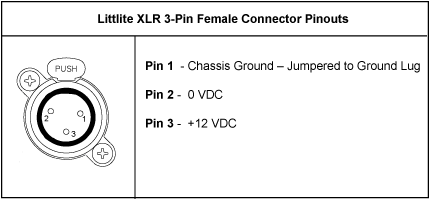

You may connect Littlites to the back of your console.

Desk lamps, such as Littlites, can be dimmed from within the software application. They can also be dimmed using the desk lamp control knob on the rear panel.
Desk lamp controls are found in Setup> Device> Brightness Settings>Light Levels. The {Desk Lamp} slider has a range of 0% (dimmest) to 100% (brightest). The default setting is 0%. The console will set the desk lamp to this setting on startup of the application. See Brightness Settings
The desk lamps can also be controlled by holding down [Displays] and rolling the level wheel.